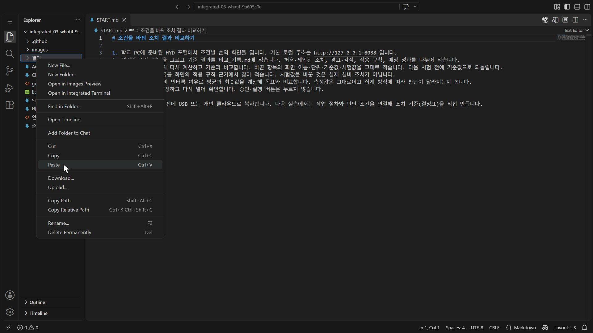
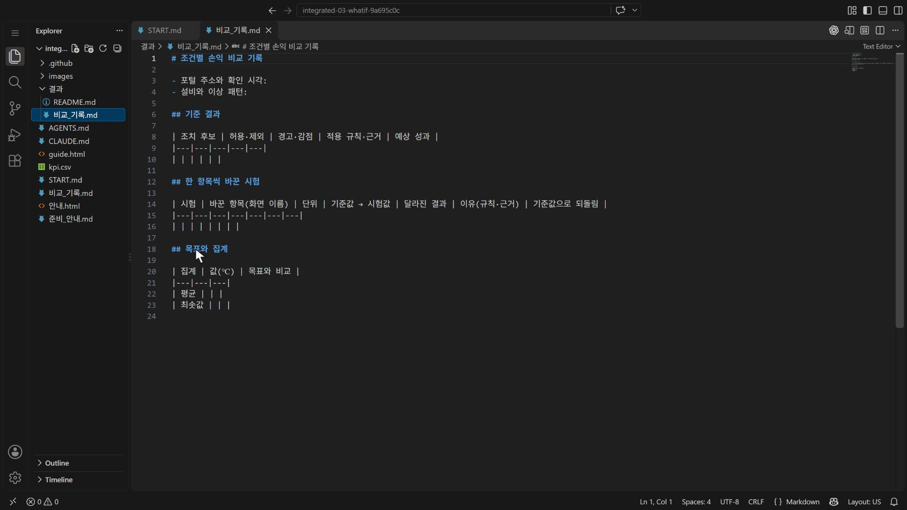
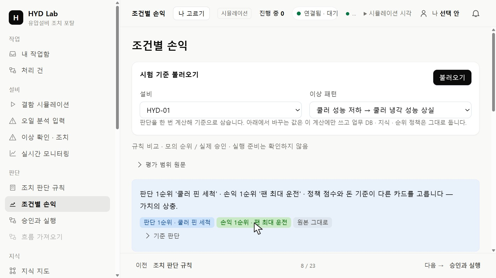
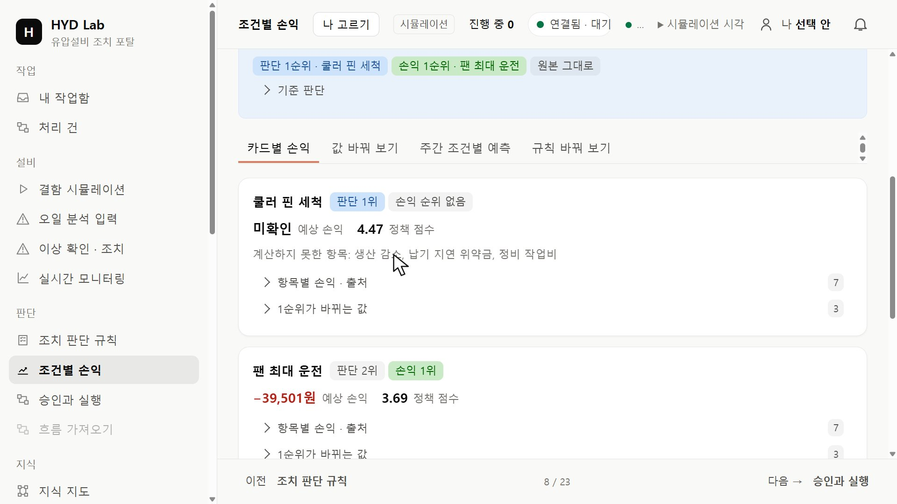
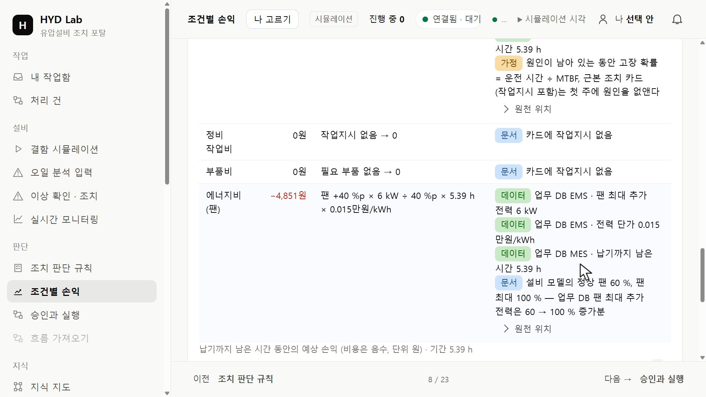
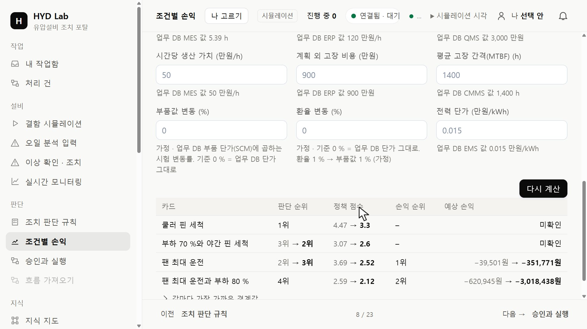
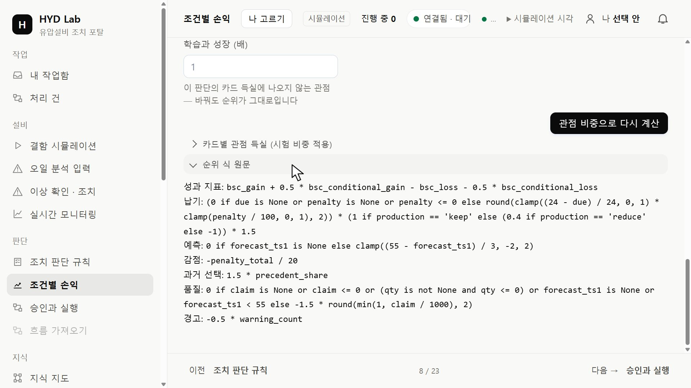

HYD · 실습 가이드조건을 바꿔 조치 결과 비교하기
같은 설비에서 시험값 하나씩 바꾸며 허용·제외된 조치와 예상 성과가 달라지는 이유를 기록합니다.
01 기록 틀 준비하기
실습 시작 도구가 연 VS Code에서 왼쪽 탐색기(Explorer)의 비교_기록.md를 마우스 오른쪽 버튼으로 누르고 Copy를 고릅니다. 이어서 결과 폴더를 오른쪽 버튼으로 누르고 Paste를 고릅니다.

결과 폴더에서 오른쪽 버튼 → Paste · 누르면 크게 보기결과 폴더 안에 비교_기록.md 사본이 생깁니다. 원래 틀은 그대로 두고 사본을 열어 기록합니다. 표는 기준 결과 · 한 항목씩 바꾼 시험 · 목표와 집계 순서입니다.

결과/비교_기록.md 사본을 연 화면(빈 기록 틀) · 누르면 크게 보기02 조건별 손익 열기
학교 PC의 HYD 포털 열기
왼쪽 메뉴의 판단 묶음에서 조건별 손익을 누르고 설비와 이상 패턴을 고른 뒤 불러오기를 누르세요. 비교_기록.md에 포털 주소와 확인 시각을 적습니다.
맨 위 요약에 판단 1순위와 손익 1순위가 나옵니다. 「근거 조회가 불완전」이 나오면 포털이 막 켜져 데이터가 덜 쌓인 것이니 몇 분 뒤 다시 불러옵니다.

요약: 판단 1순위와 손익 1순위 · 누르면 크게 보기03 기준 결과 기록하기
카드별 손익 탭에서 후보마다 판단 순위·정책 점수·손익 순위·예상 손익을 읽고, 허용·제외된 조치, 경고·감점, 적용 규칙, 예상 성과를 나누어 적으세요.

예상 손익 미확인과 계산하지 못한 항목 · 누르면 크게 보기카드의 「항목별 손익 · 출처」를 펼치면 항목마다 계산식과 출처(데이터 · 문서 · 가정)가 나옵니다.

항목별 손익의 계산식과 출처 · 누르면 크게 보기점수와 손익 금액은 다른 열에 적습니다. 값이 표시되지 않은 칸은 0으로 채우지 않고 미확인으로 둡니다.
04 한 항목만 바꿔 비교하기
값 바꿔 보기 탭에서 시험값 하나를 넣고 다시 계산을 누르세요. 칸 아래에 업무 DB의 현재 값이 나옵니다. 바꾼 항목의 화면 이름·단위·기준값·시험값을 그대로 적습니다.

비교표: 기준 → 시험값의 순위·점수·손익 · 누르면 크게 보기순위가 왜 바뀌었는지는 규칙 바꿔 보기 탭 아래의 「순위 식 원문」에서 바꾼 값이 들어가는 식을 찾아 확인합니다.

순위 식 원문: 항목마다 점수 식 · 누르면 크게 보기다음 시험 전에 요약의 원래대로로 기준값을 되돌립니다. 시험값 변경은 실제 설비 조치가 아닙니다.
05 목표와 집계 비교하기
kpi.csv의 세 설비 인터록 여유로 평균과 최솟값을 계산해 목표와 비교합니다. 측정값은 그대로이고 집계 방식에 따라 판단이 달라지는지 봅니다.
06 저장하기
비교 기록을 결과/에 저장하고 다시 엽니다. 승인·실행 버튼은 누르지 않습니다. 보관할 파일은 USB 또는 개인 클라우드로 복사하세요.
다음 실습에서는 작업 절차와 판단 조건을 연결해 조치 기준(결정표)을 직접 만듭니다.